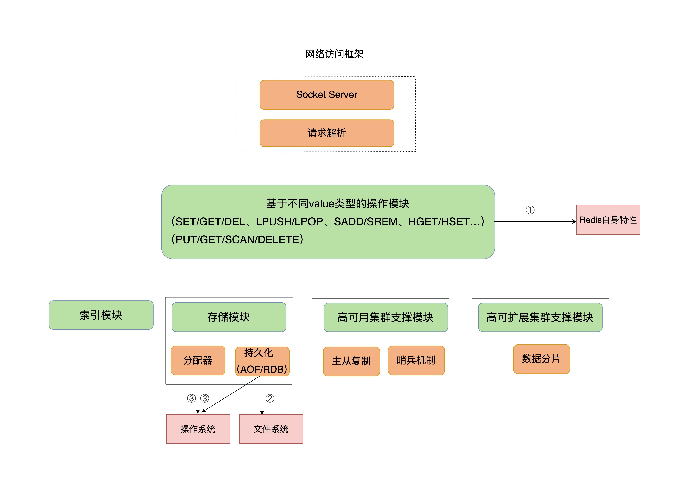
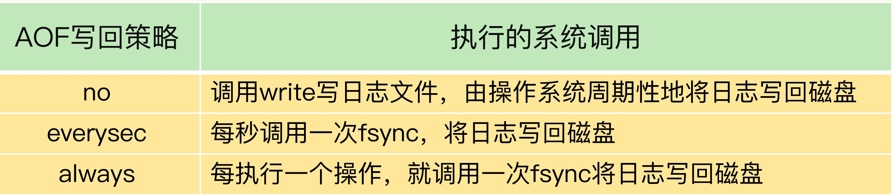

Redis 延迟响应会影响其他服务，带来一系列的连锁反应。因此，从问题认定，系统排查和应对方案这三个方面可分析延迟响应的问题
如何判断 Redis 变慢
- 查看Redis 响应延迟
基于当前环境下的Redis基线性能，如果Redis 运行时延是其基线性能的2倍
2.8.7 版本开始 提供了 -intrinsic-latency 选项，可以用来检测和统计测试期间内的最大延迟
./redis-cli --intrinsic-latency 120 Max latency so far: 17 microseconds.
Max latency so far: 44 microseconds.
Max latency so far: 94 microseconds.
Max latency so far: 110 microseconds.
Max latency so far: 119 microseconds.
36481658 total runs (avg latency: 3.2893 microseconds / 3289.32 nanoseconds per run).
Worst run took 36x longer than the average latency.
Redis 性能诊断
Redis 自身的操作特性、文件系统和操作系统

自身操作特性
Redis 提供的键值对命令操作对延迟的影响，慢查询命令、过期key值
慢查询命令
慢查询命令就是在Redis中执行速度慢的命令，导致Redis 延迟增加，可以通过Redis 日志，或者是latency monitor 工具查询变慢请求
- 用其他高效命令代替：比如不使用 SMEMBERS ，使用SSCAN 多次迭代返回
- 当需要排序、交集、并集操作时，可以在客户端完成。
- 使用keys 需要遍历键值对，高延时，所以不在生产环境使用
过期key值
过期 key 的自动删除机制，是Redis 用来回收内存空间的常用机制，但是本身会引起Redis 操作阻塞导致变慢。
Redis 过期默认情况下没100毫秒会删除一些过期key，删除算法如下：
- 采用ACTIVE_EXPIRE_CYCLE_LOOKUPS_PER_LOOP 个数的key, 并将其中过期的key 全部删除
- 超过25%的key过期了，则重复删除过程，知道过期key 比例下降到25%以下
如果触发第二条则会一直执行删除，删除操作是阻塞的，而导致第二条触发的重要原因就是频繁使用带有相同时间参数的EXPIREAT 命令设置过期key
查找是否使用了相同的时间戳，以及实际业务对过期时间的设置，可以通过在过期时间上加一定大小范围的随机数，这样保证邻近时间范围数据被删除，但是不至于同时过期
文件系统 ： AOF 模式
AOF 的三种日志写会策略 no 、 everysec 、always,依赖文件系统的两个write 和 fsync 系统调用完成. write 把日志写回到内核缓存区就可以返回了，fsync 需要日志写回磁盘才能返回时间较长。

- everysec : Redis 会使用后台子线程异步完后fsync 操作
- always : Redis 不会使用后台子线程异步执行
- aof 重写 : Redis 如果AOF 重写磁盘压力大，会导致fsync阻塞，这样主线程也会阻塞
由于 fsync 后台子线程和 AOF 重写子进程的存在，主 IO 线程一般不会被阻塞。但是，如果在重写日志时，AOF 重写子进程的写入量比较大，fsync 线程也会被阻塞，进而阻塞主线程，导致延迟增加
操作系统
swap
内存 swap 是操作系统里将内存数据在内存和磁盘间来回换入和换出的机制，涉及到磁盘的读写，所以，一旦触发 swap，无论是被换入数据的进程，还是被换出数据的进程，其性能都会受到慢速磁盘读写的影响。Redis 触发swap 主要是物理机内存不足
- Redis 实例自身使用了大量内存，导致物理机内存不足
同一台机器上的其他进程，在进行大量的读写，这样Redis的实例内存量变少会导致swap
- 解决办法是使用集群，或者是增加机器的内存
内存大页
内存大页会给Redis 带来收益，但是也会导致Redis 客户端修改小的数据，也得拷贝内存大页，这会影响Redis正常的访问操作
- 解决办法 关闭内存大页
echo never /sys/kernel/mm/transparent_hugepage/enabled